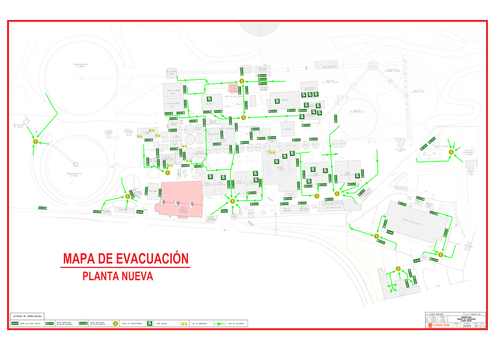

Resumen del día
Visibilidad diaria de actividades de alto riesgo, personal expuesto y coordinaciones conexas.
Trabajos críticos del día
Riesgos críticos detectados
Áreas con mayor actividad
Registro de trabajo de alto riesgo
Registro diario con ubicación en el plano, trazabilidad, continuación y cierre anticipado.
Plano – Planta Nueva
Acerca el plano y haz clic exactamente sobre el nombre del lugar. La app solo seleccionará el sector si el punto cae dentro de su zona definida.
Sin / baja carga
1–2 trabajos
3–4 trabajos
5 o más trabajos
Mis registros del día
Editar, agregar coordinación conexa, finalizar o continuar al día siguiente.| ID | Empresa | Lugar | Trabajo crítico | Horario | Trabajadores | Acciones |
|---|
Coordinación de actividades conexas
Actualiza en cualquier momento la coordinación con una o varias empresas que desarrollan trabajos aledaños o conexos.
Ubicación de la actividad propia
Historial
Cada inclusión, actualización o culminación se registra en la pestaña Historial de Google Sheets.
Coordinaciones conexas registradas
| ID | Registro | Mi empresa | Empresas conexas | Hora gestión | Actualizado | Acciones |
|---|
Mapa interactivo
Sectorización de la carga de trabajos de alto riesgo en tiempo diario.
Plano sectorizado
Use + / − para acercar. Los indicadores y nombres permanecen anclados al plano.
Sin trabajos
1–2
3–4
5+
Lista de trabajos y dashboard por sector
Dos tablas independientes: trabajos de alto riesgo y coordinaciones conexas.
Registros de actividades de alto riesgo
| ID | Fecha | Empresa | Área usuaria | Lugar | Trabajo crítico | Riesgos críticos | Trabajadores |
|---|
Registros de trabajos conexos
| ID | Fecha | Mi empresa | Lugar | Empresas conexas | Actividad | Riesgos generados | Hora gestión |
|---|
Dashboard general
Trabajadores por empresa
Sectorización del plano
Esta interfaz permite definir y corregir los sectores que utilizará la aplicación.
Sectorización
Acerca el plano, define la zona exacta del sector y asigna el título que debe utilizar la app.
Configurar sector
La zona se define con dos clics: esquina superior izquierda y esquina inferior derecha.
1. Acerca el plano
Utiliza + / − y desplázate hasta ubicar claramente el rótulo del plano.
2. Define la zona
Haz clic en Marcar zona y luego selecciona dos puntos en el plano.
Zona: aún no definida.
Importante
Las coordenadas se almacenan internamente para que la app reconozca el área, pero no se muestran a los usuarios durante el registro.
Plano para sectorización
Los sectores ya configurados se muestran con borde semitransparente.Consejo: marque únicamente el área ocupada por la instalación o rótulo. Evite superponer zonas.
Sectores configurados
Puede editar, visualizar o eliminar cualquier sector.| Sector | Actualizado | Acciones |
|---|